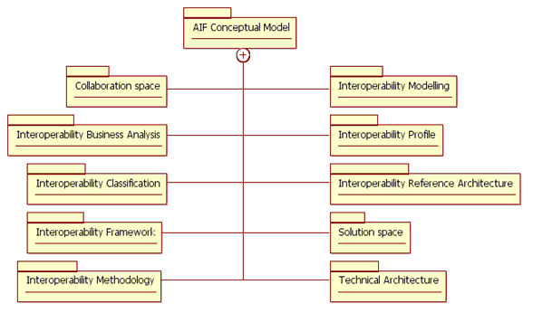

")

Specification of the AIF
AIF conceptual model
The ATHENA Interoperability Framework (AIF) provides a compound framework and associated reference architecture for capturing the research elements and solutions to interoperability issues that address the problem in a holistic way by inter-relating relevant information from different perspectives of the enterprise. The specification of the AIF has been formalised using a model-driven approach. This has resulted in the development of an AIF conceptual model. The conceptual model is structured into separate model packages covering specific concept domains that we see relevant for addressing interoperability. Each package contains descriptions of the concepts and their relationships (both within and across the concept domains).

A short description of the different concept domains are given below:
- Collaboration space: This domain defines the concepts for a collaboration space which is an environment that provides an infrastructure to support collaboration between members of a virtual enterprise network.
- Interoperability business analysis: This domain defines the concepts for interoperability business analysis which focuses on capturing business needs and interoperability issues and finding appropriate technical solutions.
- Interoperability classification: This domain defines the concepts for classification of interoperability problems and solutions.
- Interoperability framework: This domain defines the concepts for an interoperability framework.
- Interoperability methodology: This domain defines the concepts for an interoperability methodology.
- Interoperability modelling: This domain defines the concepts for interoperability modelling that focuses on capturing essential information relevant to enterprise collaboration as formalised models.
- Interoperability profile: This domain defines the concepts for an interoperability profile. An interoperability profile defines a set of results or specifications that work together. It consists of interoperability guidelines, specifications, and integrated and configured solutions from the conceptual, applicative and technical parts of the AIF.
- Interoperability reference architecture: This domain defines the concepts for an interoperability reference architecture which relates the different approaches to interoperability coming from the different research areas of ATHENA.
- Solution space: This domain defines the concepts for a solution space which defines a structuring of solutions for interoperability problems.
- Technical architecture: This domain defines the concepts for a technical architecture which provides a blueprint for implementing your technical interoperability ICT infrastructure.
AIF knowledge model
Alongside the conceptual model we have developed a partial instance model [ATHENA 2007b] that describes essential artefacts of the ATHENA universe (solutions, methods, deliverables, etc.) and how these are related. The AIF knowledge model has been developed using the enterprise architecture modelling tool Metis [Troux Technologies] and is shown in Figure 81 below. The model serves two purposes. Firstly it has helped us to reason about the concepts, structure and relationships in the specification of the AIF, and secondly it provides a “proof of concept” in the validation of the AIF.

ATHENA knowledge base
Whereas the AIF knowledge model was developed primarily from a top-down perspective, a parallel modelling effort in the requirements and piloting activities of ATHENA developed the ATHENA knowledge base from a bottom-up perspective. The knowledge base establishes relationships between requirements, interoperability issues, generic solutions and solutions using the different models produced by ATHENA projects (e.g. AIF and BIF). It was decided that the different model views of ATHENA needed to be implemented as a federation of models that would be available as a Web resource to support the pilot users. The Ontology Web Language (OWL) is a technology that was designed to provide a common way to process the content of Web information and was chosen as the vehicle for implementing the knowledge base. The selected OWL editor was Protégé [Stanford Medical Informatics].
Once the knowledge model was created it was also important to provide querying and filtering mechanisms for the users in order to exploit the knowledge base. Protégé comes with a built-in visualisation mechanism to graphically visualize and navigate the knowledge model. Figure 82 below shows a visual representation of the knowledge model. As can be seen it resembles the AIF knowledge model described above. The difference is mainly that the AIF knowledge model is wider in scope but only contains content examples to validate the conceptual model, whereas the ATHENA knowledge base is more focused (in particular relating requirements, interoperability issues to solutions) and is fully populated for this purpose.